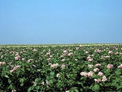

What are Seed Potatoes?
Potatoes are considered a specialty crop in Saskatchewan, being planted for large scale production by a few producers. The scientific name for the seed potato is Solanum tuberosum. The botanical genus Solanum is very large, with over 2,000 known species. Of these, 160 to 180 are tuber-bearing plants, and eight of these are cultivated as a food crop.
The species name means "tuber" and refers to the part of the potato plant which we consume. Potatoes are the only species in this genus which are grown extensively world-wide.
Potatoes are native to the temperate climate of Andes mountains of South America. Potatoes are an ancient crop, and have been harvested for food as far back as 500 B.C.. Spanish explorers are credited for introducing potatoes to Europe. In 1570, Spanish records indicate potatoes were being grown for
food.
Many people associate potatoes with Ireland, and for a good reason. Potatoes reached Ireland in 1663 and were grown extensively for many years. As Irish population grew at an extremely fast rate, potatoes became the crop of the nation. Disaster struck in 1846-47 when late blight destroyed much of the country's potatoes, resulting in the great Irish potato famine
and the loss of a million people.
Potatoes became popular in North America near the end of the 18th century and today, potatoes are a staple food that can be found in almost every home.
Why grow potatoes?
Potatoes are a reliable crop. They can produce a high volume of tubers per area, can tolerate a wide range in environmental conditions, and are adaptive to various production methods. Potatoes are tasty, nutritious, and can be stored for a long time. For these reasons, they are now the fourth most important crop (behind wheat, corn and rice) grown around the world, in terms of acreage
grown, yield and value of crop.
Where are potatoes produced?
Potatoes are grown in over 125 countries with annual production over 250 million tonnes. Countries of the former Soviet Union produce about 25% of the world's production, followed by China with 19% and Poland with 12%. North American production accounts for less than 10% of total world potato production.
Potato production on the Canadian prairies is increasing both for processing and as seed. Prairie potato growers are in an ideal position to produce
healthier and more vigorous seed potatoes than elsewhere in North America. Because we are isolated from other potato growing areas, the Saskatchewan
potato crop is less likely to be infected with diseases or be bothered by many pests. Research at the University of Saskatchewan has shown that northern grown seed potatoes have higher yield potential than southern grown seed. This phenomenon, called "Northern VigourTM
", cannot be duplicated
by our US neighbours which gives Canadian prairie potato growers a distinct advantage when marketing their product in the US.
How are potatoes produced?
Seed potato production is an intensive type of production characterized by high input costs and management requirements per unit area. It is also
characterized by high returns per unit area. Storage costs and equipment costs are high and vastly different from traditional prairie crops. |